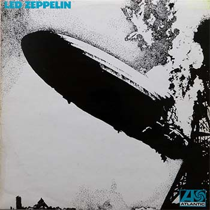
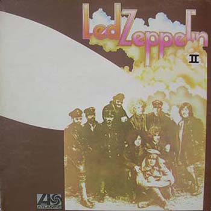
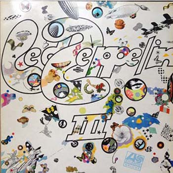
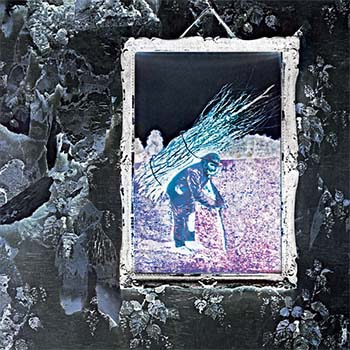
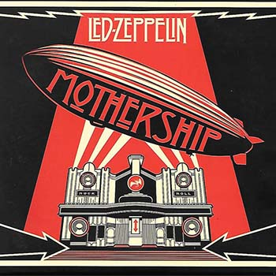
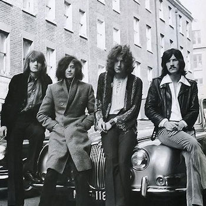
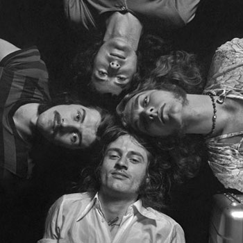
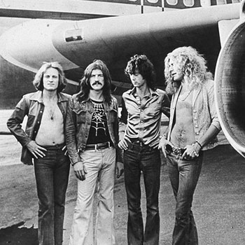

|  |  |  |
| Led Zeppelin I | Led Zeppelin II | Led Zeppelin III |
| 1968 | 1969 | 1970 |
|  |  |
|
| Led Zeppelin IV (Deluxe Edition) | Mothership | Listen Led Zeppelin on Spotify |
| 1971 | 2007 |
Led Zeppelin ist eine britisches Rockband mit über 300 Millionen verkauften Alben unc zählt damit zu den erfolgreichsten Bands überhaupt. Entstanden ist sie aus der britischen Band The Yardbirds, die sich bis auf Jimmy Page aufgelöst hatte. Nachdem Page die Besetzung, Robert Plant, John Bonham und John Paul Jones zusammen hatte (welche nicht seinem ursprünglichen Plan war) spielten sie zunächst noch unter dem Namen The New Yardbirds, da noch besetehende Verträge erfüllt werden mussten und änderten ihn erst später. Zur Namensgebung trug angeblich Keith Moon (Schlagzeuger von The Who) bei: Er soll 1966 gesagt gaben, dass eine Band um Jimmy Page "abstürtzen [würde] wie ein bleiernes Luftschiff" ("The band will go over like a lead zeppelin"). Nach Vorschlag des Produzenten Peter Grant strich man zur Verdeutlichung der Aussprache das "a" und die Bezeichnung wurde 1968 von der Band übernommen.
|  |  |  |
1968/69 spielte Led Zeppelin als Vorgruppe die erste US-Tournee. Im selben Jahr scholl die Band einen Vertrag mit Atlantic Records ab und nahm in nur 30 Stunden ihr Debütablum Led Zeppelin I auf. Schon auf diesem Album sind verschiedene musikalische Genres vereint und zunächst waren die Kritiken genauso gemischt. Im Rückblick erhilt das Album von der Musikpresse überwiegend positive Bewertungen und wird heute als Wendepunkt in der Entwicklung des Hard Rock und Heavy Metal bezeichnet. Durch die Popularität von Jimmy Page und den Manager Peter Grant wurde die Band sich in Nordamerika schnell bekannt und die dadurch steigenden Verkaufszahlen hatten zur Folge, dass das Album auf Position 10 der Billboard-Charts landete.
In Europa ließ der Durchbruch noch auf sich warten,in England hatte die Band erste Erfolge durch fünf Liveauftritten bei den Radiosendern der BBC. Nach schlechten Erfahrungen mit der ARD-Sendung "Beat-Club" entschloss sich die Band nicht mehr im Fernseh aufzutreten und sich fast ausschließlich auf Alben und Liveauftritte zu konzentrieren.
Das zweite Album, genannt Led Zeppelin II, wurde im selben Stil aufgenommen und erreichte Position 1 der US-Charts, wo es "Abbey Road" von den Beatles verdrängte.
"Absolute number-one heaviest white blues guitarist" war die Bezeichnung von Jimmy Page der Rolling Stone (Zeitschrift).
Am 5. Oktober 1970 erschien das dritte Album Led Zeppelin III. Die Stücke darauf wurden von Jimmy Page und Robert Plant in einem abgelegenen Landhaus ohne Stromversorgung in Wales geschrieben, weswegen das Album einen eher akkustischen Sound hat, der stark durch keltische Musik und Folkmusik beinflusst wurde. Zudem wurde Plant zu dem Eingangssong "Immigrant Song" auf der Island-Tour im Sommer 1970 inspieriert.
Auf dem vierten Album Led Zeppelin IV (hier die Deluxe Edition) wurde das wohl bekannteste Stück von Led Zeppelin veröffentlicht: "Stairway to heaven". Auch zum ersten Mal wurden bei diesem Album die vier kryptischen Symbole der Band gezeigt, welche auch das Album betiteln. In den USA wurde dieses Album bis heute 23 Millionen mal verkauft und zählt dort zu den sechs am häufigsten verkauften ALben.
Es folgten unzählige Auftritte und Touren duch Ammerika und Europa bis 1980. Am 27. Juni 1980 musste das Konzert in der Nürnberger Messehalle abgebrochen werde, da der Schlagzeuger John Bonham zusammenbrach. Der Auftritt in der Berliner Eissporthalle circa zwei Wochenspäter ist das letzte Led Zeppelin Konzert in der Originalbesetzung. Bonham wurde am 25.09. tot in seinem Bett aufgefunden, worauf die übrigen Bandmitglieder beschlossen Led Zeppelin aufzulösen.
Aufrund von Verträgen mit Atlantic Records musste das bandeigene Label Swan Song Records noch eim Studioalbum rausbrungen, weshalb 1982 das Album Coda erschien, auf dem Live- und Studioaufnahmen aus der Zeit von 1969 bis 1978 gesammelt sind.
2007 wurden Gerüchte von Plänen bekannt, dass Led Zeppelin eine Reunion-Tour in alter Besetzung spielen könnte. Es wurde ein einmalisge Konzert in London angekündig, welches am 10. Dezember 2007 in der O₂-Arena in London zu Ehren des 2006 verstorbenen Gründers der Plattenfirma Atlantic Records und Mit-Entdeckers von Led Zeppelin, Ahmet Ertegün, gehalten wurde. Mit Plant, Page und Jones war John Bonhams Sohn Jason Bonham als Schlagzeuger, welcher bereits zuvor mit der drei Mitgliedern gespielt und Aufnahmen gemacht hatte, auf der Bühne. Es war der erste Auftritt seit 1980 bei dem die Künstler unter dem Bandnahmen Led Zeppelin spielten.
Bei einem Pressetermin in Tokio zur Präsentation des Albums Mothership ließ Jimmy Page im Januar 2008 verlauten, dass er bereit sei, mit Led Zeppelin auf Welttournee zu gehen. Kein Interesse an einer Reunion hatte jedoch Robert Plant. Da die Band keinen neuen passenden Sänger fand, wird es aber nach Aussage des Bandmanagers keinen Zusammenschluss mehr geben. Das 2007 aufgezeichnete Konzert wurde am 17. Oktober 2012 in sechzehn deutschen Kinos der Cinemaxx-Kette unter dem Titel Led Zeppelin: Celebration Day vorgeführt und einen Monat später als Video und als Album veröffentlicht. Bei den Grammy Awards 2014 wurde es als bestes Rockalbum des Jahres ausgezeichnet.